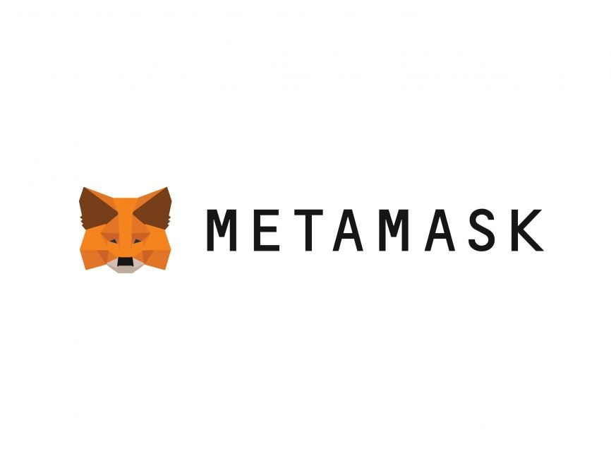

My ultimate goal as a data scientist is to make a positive impact on businesses and society through data-driven insights and solutions.
I am eager to take on new challenges and leverage my skills to contribute to projects that address real-world problems.
Let's work together to unlock the potential of data and drive meaningful change!
Thank you for visiting my profile, and I look forward to connecting with you!
